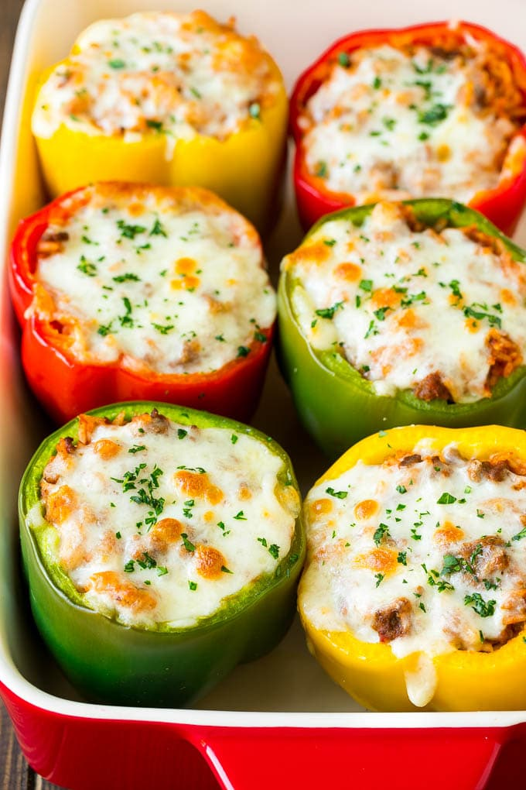

Cheesy Stuffed Peppers

Description
These delicious stuffed peppers are made from the freshest bell peppers, rice, ground beef and cheese. Easy to make, delicious to eat. They are sure to please any crowd.
Ingredients
- 1/2 cup uncooked white or brown rice
- 2 tbsp. extra-virgin olive oil, plus more for drizzling
- 1 medium yellow onion, chopped
- 3 cloves garlic, finely chopped
- 1lb. ground beef
- 1 (14.5-oz) can diced tomatoes
- 1 1/2 tsp. dried oregano
- Kosher salt
- Freshly ground black pepper
- 6 bell peppers, tops and cores removed
- 1 cup shredded Monterey jack cheese
- Chopped fresh parsley, for serving
Steps
- Preheat oven to 400 degrees. In a small saucepan, prepare rice according to package
- In a large skillet over medium heat, heat oil. Cook onion, stirring occasionally, until softened, about 7 minutes. Stir in garlic and tomato paste and cook, stirring, until fragrant, about 1 minute more. Add ground beef and cook. breaking up meat with a wooden spoon, until no longer pink, about 6 minutes. Drain excess fat.
- Stir in rice and diced tomatoes; season with oregano, salt, and pepper. Let simmer, stirring occasionally until liquid has reduced slightly, about 5 minutes.
- Arrange peppers cut side up in a 13" x 9" baking dish and drizzle with oil. Spoon beef mixture into each pepper. Top with cheese, then cover baking dish with foil.
- Bake peppers until tender, about 35 minutes. Uncover and continue to bake until cheese is bubbly, about 10 minutes more.
- Top with parsley before serving.